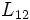

Für , wird aus einer Weibull-Verteilung ein Wert
/6ed2bc3df66dd893aefb0808148ec57e.png)
Für , wird aus einer Weibull-Verteilung ein Wert
Es bestehen zwei Möglichkeiten:
Genau festgelegte Beobachtungen, wenn
Die Wahrscheinlichkeitsdichtefunktion der Weibull-Verteilung und damit die Anteile einer genau festgelegten Beobachtung zur Likelihood wird gegeben durch:
Wobei der der Weibull-Formparameter und der angegeben. Und die restlichen gegeben durch:
Wenn die Ableitungen ,, , , bezeichnet werden, dann sind die Likelihood-Schätzungen des Maximums die Lösungen der Gleichungen :
Schätzungen der asymptotischen Standardfehler von ? sind gegeben durch:
Ein geschätzter Korrelationskoeffizient von? wird gegeben durch: